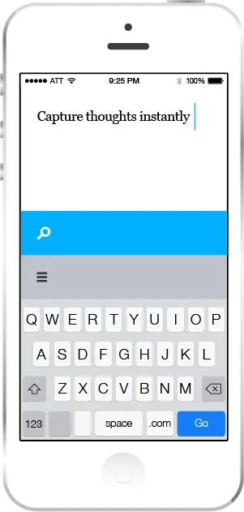
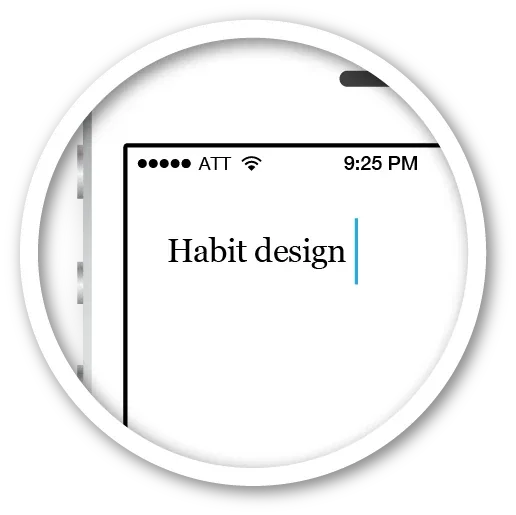
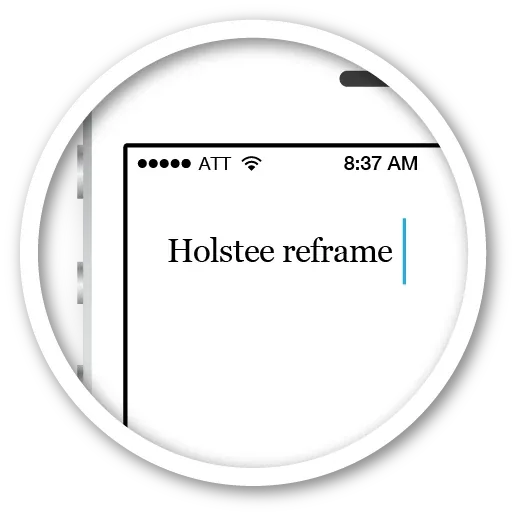

Present App on Strikingly
-

Thoughts pop in our head whenever they want; often when we are in the middle of something else; whether it’s coffee with a friend, or while we are writing a new blog post.
This is the beauty of our brains; it’s coming up with ideas and solving problems when we are doing something else. So it’s important we capture these thoughts.
Present allows you to instantly capture your thoughts, but what happens when your thought is something you want to lookup or research a bit further; which is commonly the case.
This can take you out of the moment for a good chunk of time, especially on mobile devices where websites still take quite a bit of time to load.
Present is an app to address this; so we don’t end up going through life distracted.

-
Less time waiting on this...
Technology is smart, and it doesn't need us to stick around while it does some of the dirty work, like loading pages.
so you can enjoy more of this,
What is the point of friends, and sharing stories if you aren’t present when you are together. Don’t be distracted waiting for a page to load, or repeating something in your head so you don’t forget.
Sure, you could stop your most important project to look something up, but odds are you will lose more than a few minutes of time, you will lose your momentum and train of thought as well.
-
Present helps you stay, well, present
Technology can put time on your side.
With a little extra time ‘Searched’ can go beyond bringing you search results that are a page of links. You end up doing a lot of back and forth and it isn’t super efficient. ‘Searched’ uses the extra time to solve that.
-
“Yesterday's the past, tomorrow's the future, but today is a gift. That's why it's called the present.”
Bil Keane
-

While working out you are listening to a podcast. They mention something that you want to look up. You quickly jot it down in ‘Searched’ and get back to the workout.
7:02 AM - Yup, still working out.
Wow, this podcast is on fire! You jot down a book they just mentioned. That took about 5 seconds, not even enough time to recover from that last exercise.
The normal scenario would go something like this: Stop your workout, pause the podcast, go into your browser, type in the book search, wait for the results to load, pick a result, wait for that to load, then finish the transaction or email the link to yourself.

8:16 AM - Riding the subway.
How do you look something up when you are on the subway without a signal? Well, you don't. So you either repeat the thought in your head so you don't forget, or you jot down a note, which you will have to remember to look at later and then type it again to search for it.
8:37 AM - Coffee with friend before work.
Time is precious, so is that coffee, so are your friends. We should be present and enjoy these moments. We shouldn't be staring at our phones waiting for pages to load because we are afraid we will forget that thought we just had.
We often don't need answers immediately, we just don't want to forget. So get that thought out of your head by putting it into ‘Searched,’ and get back to paying attention to your friend; you've only got a few more minutes before work, make the most of them.
-
“The bad news is time flies. The good news is you’re the pilot.” – Michael Altshuler
Thoughts happen; whenever they want, we can't always control it. That part isn't bad, but what is bad is if you tell your friend to wait a second while you wait for a page to load, and then email it to yourself so you don't forget. Or the other option is to just keep repeating it in your head, which turns you into a shell of a person who can't be present. Time and device shifting. Review when and where you want. Enter a search on one device now; view on another device, or the same one when the time is right.
-

“It was easier on the mobile device as I didn’t have to get up [to] turn on the computer and wait for it to boot up.”
-
Interested in discussing further or maybe collaborating?
-
If a picture is worth 1000 words, why do search results look the way they do?
The stuff we can’t see, like the algorithms behind search have changed dramatically, but the results; the stuff we do see & interact with hasn’t changed much since we started using search engines.
-
Product features matter, but how it impacts your life matters a lot more.
Sometimes our tools dictate our actions & then impact our lives in a bigger way. The less time we spend trying to remember something, & the more time we are present with our friends or family, or just our surroundings, the healthier & happier we will be.
-
Or we could hang at twitter
-
Today, 77% of top companies across multiple verticals have mobile page load times of five seconds or more, while mobile users are only willing to wait five seconds or less for a web page to load before leaving the site.
-
With Present you can enter your query now & view the results later.
Present captures your thought & then gets out of your way, so you can get right back to what you were doing.
When you are ready, Present will have the results beautifully formatted, and pre-loaded so you can view then instantly.
-
Don’t waste time,
or sacrifice your attention
“Time lost is never found again.” – Benjamin Franklin